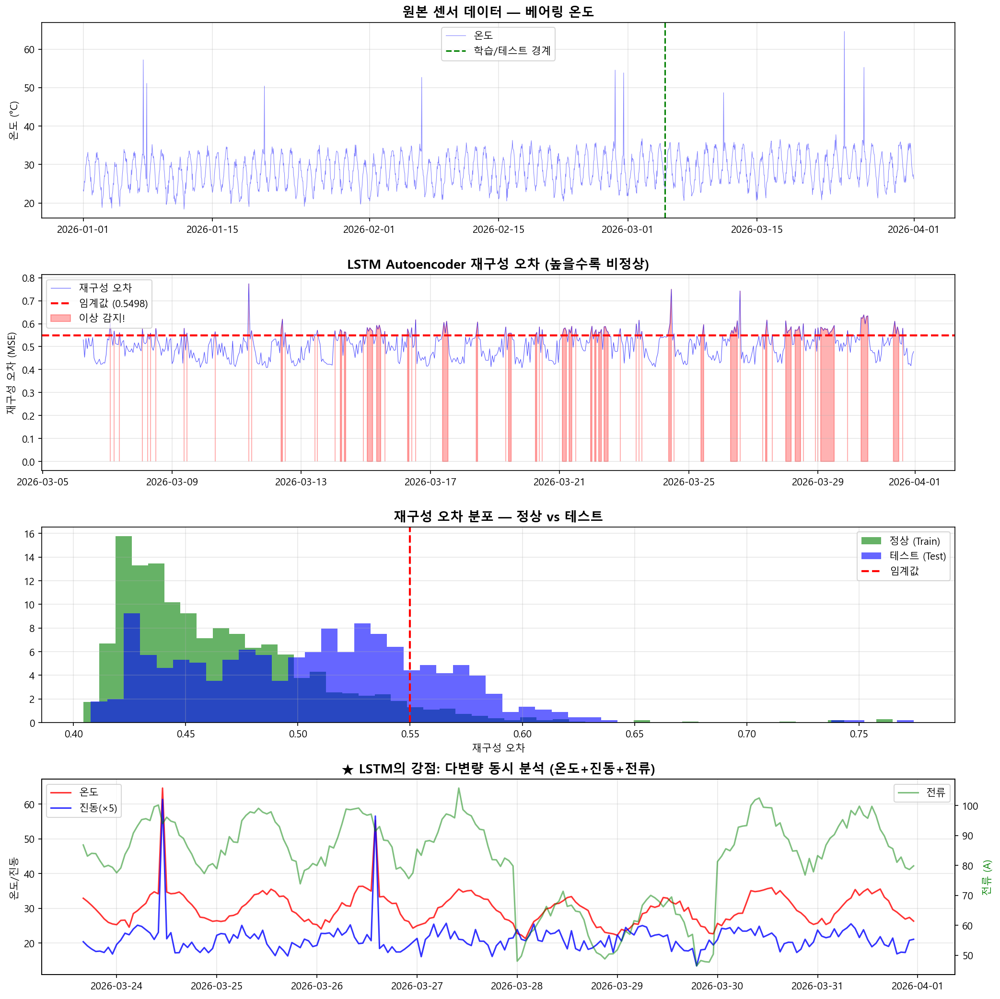

LSTM Autoencoder 시뮬레이션 결과 상세 설명
4개의 그래프를 하나하나 읽는 법 — "지금 정상인가?" 이상 탐지 체험
0 LSTM Autoencoder란?
Prophet의 질문
"내일 온도가 몇 도?"
→ 예측 (Prediction)
LSTM의 질문
"지금 상태가 정상인가?"
→ 이상 탐지 (Anomaly Detection)
이상이면 복원 못 됨 → 오차 큼 → 이상!
평소에 친구들 얼굴만 봐온 사람이
친구가 오면: "아, 이 얼굴 알아!" → 복원 성공 → 오차 작음 = 정상 ✔
모르는 사람이 오면: "어? 이건 달라!" → 복원 실패 → 오차 큼 = 이상! 🚨
센서 3개를 동시 사용 (다변량!) — Prophet과의 가장 큰 차이!
- 온도 (temperature) — 베어링 온도 (°C)
- 진동 (vibration) — 진동 RMS (mm/s)
- 전류 (current) — 모터 전류 (A)
(온도+진동+전류)
(전체의 21%)
(최근 30시간 패턴)
LSTM Autoencoder 작동 흐름
입력
최근 30시간
온도+진동+전류
Encoder
패턴 추출
핵심만 압축
Bottleneck
압축된 핵심
(정상 패턴)
Decoder
핵심에서
원본 복원 시도
판정
복원 잘 됨 → 정상
복원 못 됨 → 이상!
원본 센서 데이터 — 베어링 온도

같은 온도 데이터지만, 목적이 다릅니다:
- Prophet: 이 데이터로 "미래 온도를 예측"
- LSTM: 이 데이터로 "정상 패턴을 기억" → 비정상 감지
재구성 오차 — ★ 가장 중요한 그래프!
"각 시점에서 데이터가 정상과 얼마나 다른가?"를 수치로 보여줍니다.
읽는 방법
"재구성 오차"란 무엇인가?
정상일 때:
입력: [25.3°C, 2.5mm/s, 85A] (온도, 진동, 전류)
복원: [25.1°C, 2.6mm/s, 84.8A] ← 비슷하게 복원됨!
오차: 0.05 ← 작음 = 정상 ✔
이상일 때:
입력: [55.0°C, 12.0mm/s, 130A] (3개 모두 급등!)
복원: [27.0°C, 3.0mm/s, 87A] ← 정상 패턴으로 복원 시도했지만 전혀 다름
오차: 3.85 ← 큼! = 이상! 🚨
임계값 (0.5498)은 어떻게 정해지는가?
"정상 데이터 중에서도 5%는 오차가 이 정도까지 올라갈 수 있다. 하지만 이 위로 올라가면 정상이 아닐 가능성이 높다!"
임계값을 낮추면 → 더 민감하게 감지 (거짓 경보도 증가)
임계값을 높이면 → 덜 민감 (놓칠 수 있음)
재구성 오차 분포 — 정상 vs 테스트
★ LSTM의 강점: 다변량 동시 분석 (온도+진동+전류)
Prophet은 온도 1개만 봅니다. LSTM은 온도+진동+전류 3개를 동시에 봅니다!
왜 3개를 동시에 보는 것이 중요한가?
| 상황 | 온도 | 진동 | 전류 | Prophet 판단 | LSTM 판단 |
|---|---|---|---|---|---|
| 외부 온도 상승 | ↑ | 정상 | 정상 | 경보! ❌ (온도만 봐서) |
정상 ✔ (다른 센서 OK) |
| 베어링 손상 | ↑↑ | ↑↑ | ↑↑ | 경보 (온도만 봐) |
이상! 🚨 (3개 동시 변화!) |
| 이물질 끼임 | 정상 | 정상 | 급등! | 감지 불가 ❌ (전류 안 봐) |
이상! 🚨 (전류 급등 감지) |
LSTM은 "3개 센서의 동시 변화 패턴"을 감지합니다. 온도만 올라가면 외부 요인일 수 있지만, 온도+진동+전류가 동시에 올라가면 설비에 문제가 있다는 것입니다!
⚙ 실제 슈레더에서의 활용
경보 등급
| 이상 점수 | 등급 | 조치 |
|---|---|---|
| 0.0 ~ 0.3 | 정상 | 정상 운전 |
| 0.3 ~ 0.5 | 주의 | 모니터링 강화 |
| 0.5 ~ 0.7 | 경고 | 정비 계획 수립 |
| 0.7 ~ 0.9 | 위험 | 조기 정비 권고 |
| 0.9 ~ 1.0 | 긴급 | 즉시 정지 권고 |
"사람이 24시간 감시할 수 없는 것을 AI가 대신!"
베어링이 서서히 손상되는 것을 사람은 느끼지 못하지만, LSTM은 진동+온도+전류의 미세한 변화를 감지하여 고장 전에 경고합니다.
vs Prophet vs LSTM 총정리
| Prophet | LSTM Autoencoder | |
|---|---|---|
| 질문 | "내일 온도가 몇 도?" | "지금 정상인가?" |
| 목적 | 예측 (Prediction) | 이상 탐지 (Detection) |
| 입력 센서 | 온도 1개 (단변량) | 온도+진동+전류 3개 (다변량) |
| 그래프 핵심 | 트렌드/계절성 분해 | 재구성 오차 (이상 점수) |
| 강점 | "왜 올라가는지" 설명 | "이상 이벤트" 자동 감지 |
| 약점 | 진동/전류 활용 불가 | "왜 이상인지" 설명 어려움 |
| 슈레더 적용 | 처리량 장기 트렌드 | 베어링 이상 탐지 |
Prophet과 LSTM은 경쟁 관계가 아니라 협력 관계입니다. Prophet으로 장기 트렌드를 파악하고, LSTM으로 실시간 이상을 감지합니다. 슈레더 AI 시스템에서는 둘 다 사용합니다!